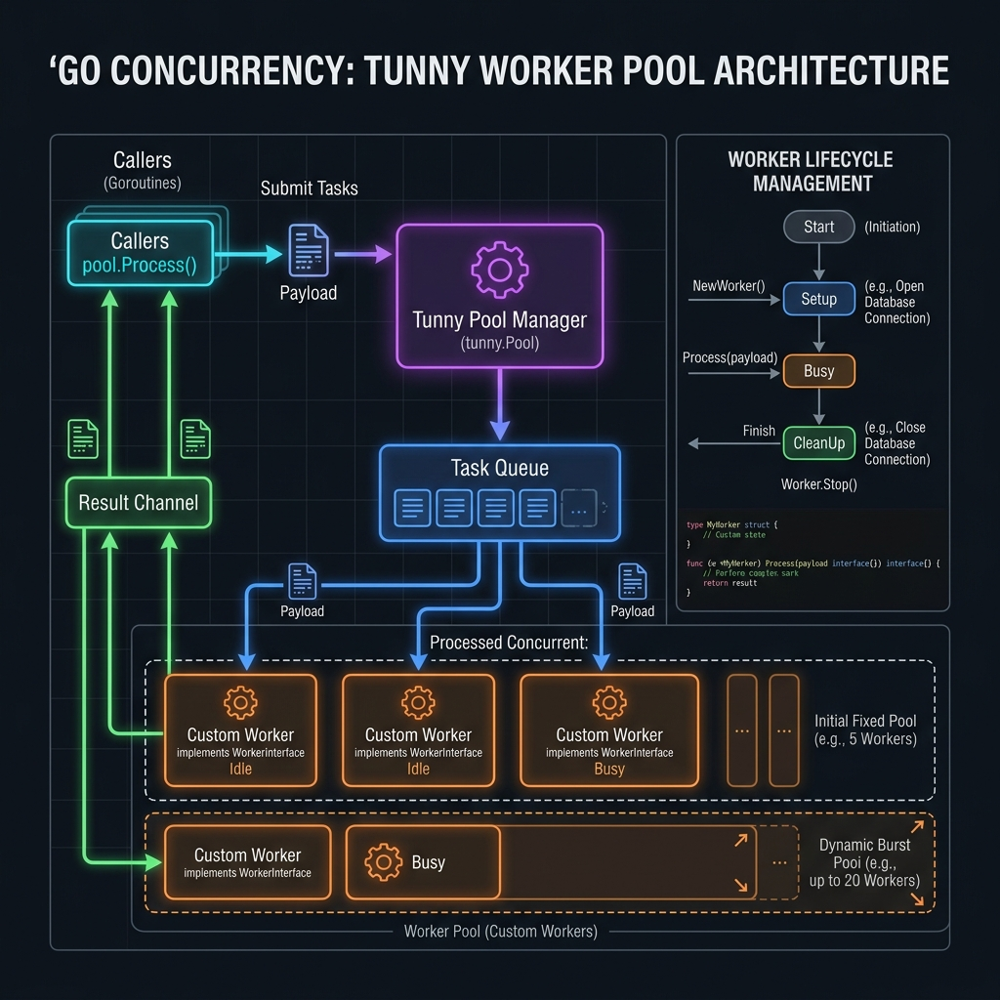

01
Giới thiệu Tunny Worker Pool ★ Basic
Tunny là một thư viện Go production-ready để quản lý goroutine pool. Khác với việc tự xây worker pool từ đầu, Tunny cung cấp API sạch, type-safe, hỗ trợ context cancellation, dynamic resize, và lifecycle management cho từng worker.

Hình 1.1: Sơ đồ kiến trúc của Tunny Worker Pool — Minh họa chi tiết luồng điều phối tác vụ thông qua Task Queue, cơ chế cấp phát Worker động (Dynamic Burst Pool), và chu kỳ quản lý vòng đời chặt chẽ (Setup -> Process -> CleanUp -> Stop) của từng Custom Worker.
Tunny là gì?
Tunny (github.com/Jeffail/tunny) là một thư viện Go mã nguồn mở do Jeff Leitch phát triển, cho phép tạo và quản lý một pool các goroutine worker với API đơn giản nhưng mạnh mẽ. Thay vì spawn goroutine tùy tiện, Tunny kiểm soát số lượng concurrency chặt chẽ, giúp tránh resource exhaustion trong các hệ thống production.
Goroutine Pooling
Tái sử dụng goroutine, tránh overhead tạo mới liên tục
Bounded Concurrency
Giới hạn số worker chạy đồng thời, kiểm soát tài nguyên
Dynamic Resize
Thay đổi số worker lúc runtime mà không restart
Context Cancel
Hủy job đang chờ hoặc đang chạy qua context
Worker Lifecycle
BlockUntilReady, Process, Interrupt hooks đầy đủ
Type-safe API
Generic wrapper, typed pool cho Go 1.18+
Vấn đề Tunny giải quyết
Trong các hệ thống Go production, việc spawn goroutine không kiểm soát dẫn đến:
Vấn đề không có Worker Pool vs Có Tunny Pool
02
Khái niệm & Kiến trúc nội bộ
Hiểu cách Tunny hoạt động bên trong: cơ chế blocking, goroutine lifecycle, và luồng xử lý job từ khi submit đến khi nhận kết quả.
Luồng xử lý Job trong Tunny
TUNNY INTERNAL ARCHITECTURE — JOB FLOW
① Caller gọi pool.Process() — bị block
② Pool dispatch job qua reqChan nội bộ
③ Worker nhận, xử lý, trả kết quả
④ Caller unblock, nhận return value
Worker Lifecycle States
WORKER STATE MACHINE
03
Cài đặt & Setup
Cài Tunny vào project Go, khởi tạo pool đầu tiên, và hiểu module structure.
bash
terminal
# Cài đặt Tunny
go get github.com/Jeffail/tunny
# Verify module
go list -m github.com/Jeffail/tunny
go
main.go — Hello Tunny
package main
import (
"fmt"
"github.com/Jeffail/tunny"
)
func main() {
// Cách 1: NewFunc — đơn giản nhất
pool := tunny.NewFunc(10, func(payload interface{}) interface{} {
num := payload.(int)
return num * num
})
defer pool.Close()
result := pool.Process(10)
fmt.Println("10² =", result.(int)) // Output: 10² = 100
}
04
Pool API — Toàn bộ Methods ★ Basic
Tham khảo đầy đủ tất cả methods của
tunny.Pool, cách sử dụng và ý nghĩa của từng method.Constructors
| Constructor | Signature | Mô tả |
|---|---|---|
| NewFunc | NewFunc(n int, f func(interface{}) interface{}) *Pool | Tạo pool với closure đơn giản nhất. Mỗi worker dùng cùng một hàm. |
| New | New(n int, factory WorkerFactory) *Pool | Tạo pool với custom WorkerFactory — mỗi worker có state riêng (DB conn, HTTP client...). |
| NewCallback | NewCallback(n int) *Pool | Pool nhận func() làm payload — tiện cho fire-and-forget tasks. |
Core Methods
| Method | Signature | Behavior |
|---|---|---|
| Process | Process(payload interface{}) interface{} | Block caller cho đến khi có worker rảnh xử lý xong và trả kết quả. Đây là method chính. |
| ProcessTimed | ProcessTimed(payload interface{}, period time.Duration) (interface{}, error) | Giống Process nhưng có timeout. Trả ErrJobTimedOut nếu quá thời gian. |
| ProcessCtx | ProcessCtx(ctx context.Context, payload interface{}) (interface{}, error) | Giống Process nhưng hỗ trợ context cancellation. Trả ErrJobNotCompleted nếu ctx bị cancel. |
| SetSize | SetSize(n int) | Thay đổi số lượng worker đang chạy runtime — không cần restart pool. |
| GetSize | GetSize() int | Trả về số lượng worker hiện tại của pool. |
| QueueLength | QueueLength() int64 | Số lượng job đang xếp hàng chờ worker. Dùng để monitoring backpressure. |
| Close | Close() | Dừng tất cả worker và giải phóng resources. Luôn gọi với defer. |
go
pool_api_demo.go — Tất cả methods
package main
import (
"context"
"fmt"
"time"
tunny "github.com/Jeffail/tunny"
)
func demoAllMethods() {
pool := tunny.NewFunc(4, func(payload interface{}) interface{} {
time.Sleep(50 * time.Millisecond)
return fmt.Sprintf("processed: %v", payload)
})
defer pool.Close()
// ── 1. Process (blocking) ──
result := pool.Process("hello")
fmt.Println(result) // processed: hello
// ── 2. ProcessTimed (với timeout) ──
res, err := pool.ProcessTimed("world", 100*time.Millisecond)
if err != nil {
fmt.Println("Timeout!", err) // tunny.ErrJobTimedOut
} else {
fmt.Println(res)
}
// ── 3. ProcessCtx (với context cancellation) ──
ctx, cancel := context.WithTimeout(context.Background(), 200*time.Millisecond)
defer cancel()
res2, err2 := pool.ProcessCtx(ctx, "ctxjob")
if err2 != nil {
fmt.Println("ctx cancelled:", err2)
} else {
fmt.Println(res2)
}
// ── 4. GetSize & QueueLength ──
fmt.Printf("Workers: %d, Queue: %d\n",
pool.GetSize(),
pool.QueueLength())
// ── 5. SetSize — dynamic resize ──
pool.SetSize(8) // scale up
fmt.Println("After scale up:", pool.GetSize()) // 8
pool.SetSize(2) // scale down
fmt.Println("After scale down:", pool.GetSize()) // 2
}
05
WorkerInterface — Custom Worker
Khi worker cần state riêng (database connection, HTTP client, cache...), implement
tunny.Worker interface.Interface Definition
go
tunny/worker.go — Interface definition
// Worker là interface cần implement để tạo custom worker
type Worker interface {
// Process được gọi khi worker nhận job
Process(payload interface{}) interface{}
// BlockUntilReady được gọi trước khi worker nhận job tiếp theo
// Dùng để warm-up, reconnect, hoặc rate-limiting
BlockUntilReady()
// Interrupt được gọi khi ProcessCtx() bị cancel trong lúc worker đang chạy
Interrupt()
// Terminate được gọi khi pool.Close() — dùng để cleanup resources
Terminate()
}
Custom Worker với Database Connection
go
db_worker.go — Worker với DB connection riêng
package pool
import (
"context"
"database/sql"
"fmt"
"log"
tunny "github.com/Jeffail/tunny"
)
// QueryRequest là payload được gửi vào pool
type QueryRequest struct {
SQL string
Args []interface{}
Cancel context.CancelFunc // dùng cho Interrupt
}
// DBWorker implements tunny.Worker — mỗi worker giữ 1 DB connection
type DBWorker struct {
db *sql.DB
ctx context.Context
cancelFn context.CancelFunc
}
// BlockUntilReady — ping DB trước khi nhận job tiếp theo
func (w *DBWorker) BlockUntilReady() {
for {
if err := w.db.Ping(); err == nil {
return
}
log.Println("DBWorker: waiting for DB connection...")
// retry sau 500ms
}
}
// Process — thực hiện query
func (w *DBWorker) Process(payload interface{}) interface{} {
req := payload.(*QueryRequest)
ctx, cancel := context.WithCancel(context.Background())
w.ctx, w.cancelFn = ctx, cancel
rows, err := w.db.QueryContext(ctx, req.SQL, req.Args...)
if err != nil {
return fmt.Errorf("query error: %w", err)
}
defer rows.Close()
var results []map[string]interface{}
// ... scan rows ...
return results
}
// Interrupt — cancel query đang chạy khi context bị cancel
func (w *DBWorker) Interrupt() {
if w.cancelFn != nil {
w.cancelFn()
}
}
// Terminate — đóng DB connection khi pool close
func (w *DBWorker) Terminate() {
if w.db != nil {
w.db.Close()
}
}
// Khởi tạo pool với custom DBWorker
func NewDBPool(dsn string, poolSize int) *tunny.Pool {
return tunny.New(poolSize, func() tunny.Worker {
db, err := sql.Open("postgres", dsn)
if err != nil {
log.Fatal(err)
}
return &DBWorker{db: db}
})
}
06
Pattern: Basic Worker Pool ★ Basic
Các use-case cơ bản: xử lý concurrent HTTP requests, image resize, và fire-and-forget tasks với NewCallback.
Pattern 6.1 — Concurrent HTTP Requests
go
http_pool.go — Xử lý song song HTTP requests
package main
import (
"fmt"
"net/http"
"sync"
"time"
"github.com/Jeffail/tunny"
)
type URLRequest struct {
URL string
Index int
}
type URLResult struct {
Index int
StatusCode int
Error error
Latency time.Duration
}
func FetchURLsConcurrently(urls []string, workers int) []URLResult {
pool := tunny.NewFunc(workers, func(payload interface{}) interface{} {
req := payload.(URLRequest)
start := time.Now()
resp, err := http.Get(req.URL)
if err != nil {
return URLResult{Index: req.Index, Error: err}
}
defer resp.Body.Close()
return URLResult{
Index: req.Index,
StatusCode: resp.StatusCode,
Latency: time.Since(start),
}
})
defer pool.Close()
results := make([]URLResult, len(urls))
var wg sync.WaitGroup
for i, url := range urls {
wg.Add(1)
go func(idx int, u string) {
defer wg.Done()
result := pool.Process(URLRequest{URL: u, Index: idx})
results[idx] = result.(URLResult)
}(i, url)
}
wg.Wait()
return results
}
func main() {
urls := []string{
"https://httpbin.org/get",
"https://httpbin.org/delay/1",
"https://httpbin.org/status/404",
}
results := FetchURLsConcurrently(urls, 5)
for _, r := range results {
if r.Error != nil {
fmt.Printf("[%d] ERROR: %v\n", r.Index, r.Error)
} else {
fmt.Printf("[%d] HTTP %d — %v\n", r.Index, r.StatusCode, r.Latency)
}
}
}
Pattern 6.2 — NewCallback Pool (Fire-and-Forget)
go
callback_pool.go — Task queue với NewCallback
func callbackPoolExample() {
// NewCallback pool nhận func() làm payload
pool := tunny.NewCallback(8)
defer pool.Close()
var wg sync.WaitGroup
var counter int64
for i := 0; i < 100; i++ {
wg.Add(1)
go func(id int) {
pool.Process(func() {
defer wg.Done()
atomic.AddInt64(&counter, 1)
// thực hiện work...
time.Sleep(10 * time.Millisecond)
})
}(i)
}
wg.Wait()
fmt.Printf("Processed %d tasks\n", atomic.LoadInt64(&counter))
}
07
Pattern: Type-Safe Generic Pool ★ Advanced
Wrap Tunny với Go generics (1.18+) để tạo type-safe pool, loại bỏ interface{} assertions và cải thiện code clarity.
go
typed_pool.go — Generic wrapper Go 1.18+
package workerpool
import (
"context"
"time"
"github.com/Jeffail/tunny"
)
// TypedPool là generic wrapper quanh tunny.Pool
type TypedPool[I, O any] struct {
pool *tunny.Pool
}
// NewTypedPool tạo type-safe pool với worker function
func NewTypedPool[I, O any](size int, fn func(I) O) *TypedPool[I, O] {
pool := tunny.NewFunc(size, func(payload interface{}) interface{} {
return fn(payload.(I))
})
return &TypedPool[I, O]{pool: pool}
}
// Process — type-safe, không cần type assertion
func (p *TypedPool[I, O]) Process(input I) O {
result := p.pool.Process(input)
return result.(O)
}
// ProcessCtx — với context cancellation
func (p *TypedPool[I, O]) ProcessCtx(ctx context.Context, input I) (O, error) {
result, err := p.pool.ProcessCtx(ctx, input)
if err != nil {
var zero O
return zero, err
}
return result.(O), nil
}
// ProcessTimed — với timeout
func (p *TypedPool[I, O]) ProcessTimed(input I, d time.Duration) (O, error) {
result, err := p.pool.ProcessTimed(input, d)
if err != nil {
var zero O
return zero, err
}
return result.(O), nil
}
func (p *TypedPool[I, O]) SetSize(n int) { p.pool.SetSize(n) }
func (p *TypedPool[I, O]) GetSize() int { return p.pool.GetSize() }
func (p *TypedPool[I, O]) Close() { p.pool.Close() }
// ── Sử dụng ──
type ImageTask struct {
Path string
Width int
Height int
}
type ImageResult struct {
Path string
Error error
}
func ExampleTypedPool() {
// Không có interface{} assertions ở caller!
imgPool := NewTypedPool(4, func(task ImageTask) ImageResult {
// resize logic...
return ImageResult{Path: task.Path}
})
defer imgPool.Close()
result := imgPool.Process(ImageTask{
Path: "/uploads/photo.jpg",
Width: 800, Height: 600,
})
// result là ImageResult — hoàn toàn type-safe!
_ = result
}
08
Pattern: Context & Cancellation ★ Advanced
Xử lý timeout, deadline và graceful cancellation với ProcessCtx — bao gồm cả cancelling job đang chờ trong queue và job đang chạy.
⚠ Lưu ý quan trọng
Khi context bị cancel sau khi worker đã bắt đầu chạy, Tunny sẽ gọi
worker.Interrupt(). Bạn phải implement Interrupt() trong custom worker để thực sự hủy operation.
go
context_pool.go — Context, timeout, graceful cancel
package main
import (
"context"
"fmt"
"time"
"github.com/Jeffail/tunny"
)
// CancellableWorker hỗ trợ interrupt mid-operation
type CancellableWorker struct {
cancel context.CancelFunc
}
func (w *CancellableWorker) BlockUntilReady() {}
func (w *CancellableWorker) Terminate() {}
func (w *CancellableWorker) Process(payload interface{}) interface{} {
ctx, cancel := context.WithCancel(context.Background())
w.cancel = cancel
defer cancel()
url := payload.(string)
// Simulate long-running HTTP call với cancellable context
req, _ := http.NewRequestWithContext(ctx, "GET", url, nil)
resp, err := http.DefaultClient.Do(req)
if err != nil {
return fmt.Errorf("request cancelled or failed: %w", err)
}
defer resp.Body.Close()
return resp.StatusCode
}
// Interrupt được gọi khi ProcessCtx() bị cancel
func (w *CancellableWorker) Interrupt() {
if w.cancel != nil {
w.cancel() // cancel HTTP request đang chạy
}
}
func main() {
pool := tunny.New(4, func() tunny.Worker {
return &CancellableWorker{}
})
defer pool.Close()
// Case 1: Timeout — job chưa được worker nhận
ctx1, cancel1 := context.WithTimeout(context.Background(), 100*time.Millisecond)
defer cancel1()
_, err := pool.ProcessCtx(ctx1, "https://slow-api.example.com")
if err == tunny.ErrJobNotCompleted {
fmt.Println("Job timed out before/during processing")
}
// Case 2: Manual cancel
ctx2, cancel2 := context.WithCancel(context.Background())
go func() {
time.Sleep(50 * time.Millisecond)
cancel2() // cancel từ goroutine khác
}()
res, err := pool.ProcessCtx(ctx2, "https://api.example.com")
if err != nil {
fmt.Println("Job was cancelled:", err)
} else {
fmt.Println("Result:", res)
}
}
09
Pattern: Dynamic Pool Resize ★ Advanced
Auto-scaling worker pool dựa trên queue depth, CPU load, hoặc time-of-day — không cần restart.
go
autoscale_pool.go — Dynamic autoscaling
package pool
import (
"context"
"log"
"runtime"
"sync/atomic"
"time"
"github.com/Jeffail/tunny"
)
type AutoScalePool struct {
pool *tunny.Pool
minSize int
maxSize int
queueLen *int64 // custom counter
}
func NewAutoScalePool(minSize, maxSize int, fn func(interface{}) interface{}) *AutoScalePool {
p := &AutoScalePool{
pool: tunny.NewFunc(minSize, fn),
minSize: minSize,
maxSize: maxSize,
}
return p
}
// StartAutoScaler — goroutine monitor và auto-adjust size
func (p *AutoScalePool) StartAutoScaler(ctx context.Context) {
go func() {
ticker := time.NewTicker(5 * time.Second)
defer ticker.Stop()
for {
select {
case <-ctx.Done():
return
case <-ticker.C:
p.adjust()
}
}
}()
}
func (p *AutoScalePool) adjust() {
queueLen := p.pool.QueueLength()
currentSize := p.pool.GetSize()
numCPU := runtime.NumCPU()
var newSize int
switch {
case queueLen > int64(currentSize*2):
// Queue dài gấp đôi workers → scale up 50%
newSize = currentSize + currentSize/2
case queueLen == 0 && currentSize > p.minSize:
// Queue rỗng → scale down
newSize = currentSize/2
default:
return // không thay đổi
}
// Clamp trong [minSize, maxSize * numCPU]
if newSize < p.minSize { newSize = p.minSize }
if newSize > p.maxSize*numCPU { newSize = p.maxSize*numCPU }
if newSize != currentSize {
log.Printf("AutoScale: %d → %d workers (queue=%d)",
currentSize, newSize, queueLen)
p.pool.SetSize(newSize)
}
}
func (p *AutoScalePool) Process(payload interface{}) interface{} {
return p.pool.Process(payload)
}
func (p *AutoScalePool) Close() { p.pool.Close() }
10
Pattern: Priority Queue Pool ★ Expert
Tunny không có built-in priority. Pattern này xây dựng priority dispatcher bên ngoài: high-priority jobs được forward vào pool trước.
go
priority_pool.go — Priority queue dispatcher
package pool
import (
"container/heap"
"context"
"sync"
"github.com/Jeffail/tunny"
)
type Priority int
const (
LowPriority Priority = 1
MediumPriority Priority = 5
HighPriority Priority = 10
CriticalPriority Priority = 100
)
type PriorityJob struct {
Payload interface{}
Priority Priority
ResultCh chan interface{}
index int
}
// priorityQueue implements heap.Interface
type priorityQueue []*PriorityJob
func (pq priorityQueue) Len() int { return len(pq) }
func (pq priorityQueue) Less(i, j int) bool { return pq[i].Priority > pq[j].Priority }
func (pq priorityQueue) Swap(i, j int) { pq[i], pq[j] = pq[j], pq[i]; pq[i].index = i; pq[j].index = j }
func (pq *priorityQueue) Push(x interface{}) {
item := x.(*PriorityJob)
item.index = len(*pq)
*pq = append(*pq, item)
}
func (pq *priorityQueue) Pop() interface{} {
old := *pq
n := len(old)
item := old[n-1]
*pq = old[:n-1]
return item
}
type PriorityPool struct {
pool *tunny.Pool
pq priorityQueue
mu sync.Mutex
signal chan struct{}
ctx context.Context
cancelFn context.CancelFunc
}
func NewPriorityPool(size int, fn func(interface{}) interface{}) *PriorityPool {
ctx, cancel := context.WithCancel(context.Background())
pp := &PriorityPool{
pool: tunny.NewFunc(size, fn),
signal: make(chan struct{}, 1),
ctx: ctx,
cancelFn: cancel,
}
heap.Init(&pp.pq)
go pp.dispatcher()
return pp
}
func (pp *PriorityPool) Submit(payload interface{}, priority Priority) chan interface{} {
job := &PriorityJob{
Payload: payload,
Priority: priority,
ResultCh: make(chan interface{}, 1),
}
pp.mu.Lock()
heap.Push(&pp.pq, job)
pp.mu.Unlock()
// Signal dispatcher
select {
case pp.signal <- struct{}{}:
default:
}
return job.ResultCh
}
func (pp *PriorityPool) dispatcher() {
for {
select {
case <-pp.ctx.Done():
return
case <-pp.signal:
for {
pp.mu.Lock()
if len(pp.pq) == 0 {
pp.mu.Unlock()
break
}
job := heap.Pop(&pp.pq).(*PriorityJob)
pp.mu.Unlock()
go func(j *PriorityJob) {
result := pp.pool.Process(j.Payload)
j.ResultCh <- result
}(job)
}
}
}
}
func (pp *PriorityPool) Close() {
pp.cancelFn()
pp.pool.Close()
}
// ── Usage ──
func ExamplePriorityPool() {
pp := NewPriorityPool(4, func(p interface{}) interface{} {
return fmt.Sprintf("done: %v", p)
})
defer pp.Close()
// Submit jobs với các mức ưu tiên khác nhau
r1 := pp.Submit("user-checkout", CriticalPriority)
r2 := pp.Submit("send-report", LowPriority)
r3 := pp.Submit("sync-inventory", MediumPriority)
fmt.Println(<-r1, <-r2, <-r3)
}
11
Pattern: Circuit Breaker + Retry Pool ★ Expert
Kết hợp Tunny với Circuit Breaker pattern để tự động dừng gửi job khi service downstream bị lỗi, tránh cascade failure.
CIRCUIT BREAKER STATE MACHINE
go
circuit_breaker_pool.go — Resilient pool với circuit breaker
package resilient
import (
"errors"
"sync"
"sync/atomic"
"time"
"github.com/Jeffail/tunny"
)
type CBState int32
const (
StateClosed CBState = iota
StateOpen
StateHalfOpen
)
var ErrCircuitOpen = errors.New("circuit breaker is open")
type CircuitBreakerPool struct {
pool *tunny.Pool
state int32 // atomic CBState
failures int64 // atomic failure count
threshold int64
resetTimeout time.Duration
openedAt time.Time
mu sync.Mutex
}
func NewCBPool(size int, threshold int64, resetTimeout time.Duration,
fn func(interface{}) interface{}) *CircuitBreakerPool {
return &CircuitBreakerPool{
pool: tunny.NewFunc(size, fn),
threshold: threshold,
resetTimeout: resetTimeout,
}
}
func (cb *CircuitBreakerPool) state() CBState {
return CBState(atomic.LoadInt32(&cb.state))
}
func (cb *CircuitBreakerPool) Process(payload interface{}) (interface{}, error) {
switch cb.state() {
case StateOpen:
// Check if reset timeout expired
cb.mu.Lock()
shouldProbe := time.Since(cb.openedAt) >= cb.resetTimeout
cb.mu.Unlock()
if !shouldProbe {
return nil, ErrCircuitOpen
}
// Transition to half-open for probe
atomic.StoreInt32(&cb.state, int32(StateHalfOpen))
fallthrough
case StateClosed, StateHalfOpen:
result := cb.pool.Process(payload)
if err, ok := result.(error); ok {
cb.recordFailure()
return nil, err
}
// Success: reset circuit
atomic.StoreInt64(&cb.failures, 0)
atomic.StoreInt32(&cb.state, int32(StateClosed))
return result, nil
}
return nil, ErrCircuitOpen
}
func (cb *CircuitBreakerPool) recordFailure() {
failures := atomic.AddInt64(&cb.failures, 1)
if failures >= cb.threshold {
cb.mu.Lock()
cb.openedAt = time.Now()
cb.mu.Unlock()
atomic.StoreInt32(&cb.state, int32(StateOpen))
}
}
func (cb *CircuitBreakerPool) Close() { cb.pool.Close() }
12
Pattern: ETL Pipeline Production-Ready ★ Expert
Kết hợp tất cả pattern để xây dựng hệ thống ETL thực tế với Tunny: multi-source extract, parallel transform, bulk load vào database, retry logic, và dead letter queue.
ETL PIPELINE ARCHITECTURE WITH TUNNY
go
etl_pipeline.go — Production ETL với Tunny (phần 1: types & pools)
package etl
import (
"context"
"database/sql"
"encoding/csv"
"fmt"
"log"
"os"
"sync"
"time"
"github.com/Jeffail/tunny"
)
// ── Types ──
type Record struct {
Source string
RawData map[string]string
Timestamp time.Time
}
type TransformedRecord struct {
ID string
Data map[string]interface{}
Valid bool
Error error
}
type ETLConfig struct {
ExtractWorkers int
TransformWorkers int
LoadWorkers int
BatchSize int
MaxRetries int
RetryDelay time.Duration
DBDSN string
}
// ── ETL Pipeline ──
type ETLPipeline struct {
config ETLConfig
extractPool *tunny.Pool
xformPool *tunny.Pool
loadPool *tunny.Pool
db *sql.DB
deadLetter chan TransformedRecord
metrics ETLMetrics
}
type ETLMetrics struct {
Extracted int64
Transformed int64
Loaded int64
Errors int64
mu sync.Mutex
}
func NewETLPipeline(cfg ETLConfig) (*ETLPipeline, error) {
db, err := sql.Open("postgres", cfg.DBDSN)
if err != nil {
return nil, fmt.Errorf("open db: %w", err)
}
db.SetMaxOpenConns(cfg.LoadWorkers * 2)
db.SetMaxIdleConns(cfg.LoadWorkers)
p := &ETLPipeline{
config: cfg,
db: db,
deadLetter: make(chan TransformedRecord, 1000),
}
// Extract pool: đọc CSV, gọi API song song
p.extractPool = tunny.NewFunc(cfg.ExtractWorkers, p.extractWorker)
// Transform pool: validate + normalize + enrich
p.xformPool = tunny.NewFunc(cfg.TransformWorkers, p.transformWorker)
// Load pool: batch insert vào PostgreSQL
p.loadPool = tunny.New(cfg.LoadWorkers, func() tunny.Worker {
return &DBLoadWorker{db: db, batchSize: cfg.BatchSize}
})
return p, nil
}
go
etl_pipeline.go — Phần 2: Run pipeline + Retry + Dead Letter
// Run chạy toàn bộ ETL pipeline
func (p *ETLPipeline) Run(ctx context.Context, sources []string) error {
rawCh := make(chan Record, 500)
xformCh := make(chan TransformedRecord, 500)
batchCh := make(chan []TransformedRecord, 20)
var wg sync.WaitGroup
// Stage 1: EXTRACT — fan-out đọc từ nhiều nguồn
wg.Add(1)
go func() {
defer wg.Done()
defer close(rawCh)
var extractWg sync.WaitGroup
for _, src := range sources {
extractWg.Add(1)
go func(source string) {
defer extractWg.Done()
// Extract qua Tunny pool
result := p.extractPool.Process(source)
records := result.([]Record)
for _, r := range records {
select {
case rawCh <- r:
case <-ctx.Done(): return
}
}
}(src)
}
extractWg.Wait()
}()
// Stage 2: TRANSFORM — parallel transform
wg.Add(1)
go func() {
defer wg.Done()
defer close(xformCh)
var xformWg sync.WaitGroup
for raw := range rawCh {
xformWg.Add(1)
go func(r Record) {
defer xformWg.Done()
result, err := p.xformPool.ProcessCtx(ctx, r)
if err != nil { return }
xformCh <- result.(TransformedRecord)
}(raw)
}
xformWg.Wait()
}()
// Stage 3: BATCH — gom thành batch 1000 records
wg.Add(1)
go func() {
defer wg.Done()
defer close(batchCh)
batch := make([]TransformedRecord, 0, p.config.BatchSize)
ticker := time.NewTicker(5 * time.Second)
defer ticker.Stop()
flush := func() {
if len(batch) > 0 {
batchCh <- batch
batch = make([]TransformedRecord, 0, p.config.BatchSize)
}
}
for {
select {
case rec, ok := <-xformCh:
if !ok { flush(); return }
if rec.Valid {
batch = append(batch, rec)
if len(batch) >= p.config.BatchSize { flush() }
} else {
p.deadLetter <- rec // invalid → dead letter
}
case <-ticker.C:
flush() // flush sau 5s dù chưa đủ batch
case <-ctx.Done(): return
}
}
}()
// Stage 4: LOAD — bulk insert với retry
wg.Add(1)
go func() {
defer wg.Done()
var loadWg sync.WaitGroup
for batch := range batchCh {
loadWg.Add(1)
go func(b []TransformedRecord) {
defer loadWg.Done()
p.loadWithRetry(ctx, b)
}(batch)
}
loadWg.Wait()
}()
wg.Wait()
return ctx.Err()
}
// loadWithRetry — exponential backoff retry
func (p *ETLPipeline) loadWithRetry(ctx context.Context, batch []TransformedRecord) {
for attempt := 0; attempt < p.config.MaxRetries; attempt++ {
result, err := p.loadPool.ProcessCtx(ctx, batch)
if err == nil {
loaded := result.(int)
log.Printf("Loaded %d records", loaded)
return
}
backoff := p.config.RetryDelay * (1 << attempt)
log.Printf("Load failed (attempt %d/%d): %v, retrying in %v",
attempt+1, p.config.MaxRetries, err, backoff)
select {
case <-time.After(backoff):
case <-ctx.Done(): return
}
}
// Tất cả retries thất bại → dead letter
for _, r := range batch {
p.deadLetter <- r
}
}
// Graceful shutdown
func (p *ETLPipeline) Close() {
p.extractPool.Close()
p.xformPool.Close()
p.loadPool.Close()
p.db.Close()
close(p.deadLetter)
}
// ── Main ──
func main() {
cfg := ETLConfig{
ExtractWorkers: 5,
TransformWorkers: 10,
LoadWorkers: 3,
BatchSize: 1000,
MaxRetries: 3,
RetryDelay: 500 * time.Millisecond,
DBDSN: os.Getenv("DATABASE_URL"),
}
pipeline, err := NewETLPipeline(cfg)
if err != nil {
log.Fatal(err)
}
defer pipeline.Close()
ctx, cancel := context.WithTimeout(context.Background(), 30*time.Minute)
defer cancel()
sources := []string{
"data/orders_2024.csv",
"https://api.example.com/products",
"kafka://events-topic",
}
if err := pipeline.Run(ctx, sources); err != nil {
log.Printf("Pipeline completed with error: %v", err)
}
}
13
Monitoring & Observability
Tích hợp Prometheus metrics, structured logging, và health check endpoint cho Tunny pool trong môi trường production.
QueueLength()
backpressure monitor
GetSize()
active workers
ProcessTimed
latency tracking
ErrJobTimedOut
timeout rate
go
monitored_pool.go — Prometheus + structured logging
package pool
import (
"context"
"log/slog"
"time"
"github.com/prometheus/client_golang/prometheus"
"github.com/prometheus/client_golang/prometheus/promauto"
"github.com/Jeffail/tunny"
)
type MonitoredPool struct {
pool *tunny.Pool
name string
logger *slog.Logger
// Prometheus metrics
jobsTotal prometheus.Counter
jobsErrors prometheus.Counter
jobDuration prometheus.Histogram
queueDepth prometheus.Gauge
workerCount prometheus.Gauge
}
func NewMonitoredPool(name string, size int, fn func(interface{}) interface{}) *MonitoredPool {
labels := prometheus.Labels{"pool": name}
mp := &MonitoredPool{
pool: tunny.NewFunc(size, fn),
name: name,
logger: slog.Default(),
jobsTotal: promauto.NewCounter(prometheus.CounterOpts{
Name: "tunny_jobs_total",
Help: "Total jobs processed",
ConstLabels: labels,
}),
jobsErrors: promauto.NewCounter(prometheus.CounterOpts{
Name: "tunny_jobs_errors_total",
Help: "Total jobs failed",
ConstLabels: labels,
}),
jobDuration: promauto.NewHistogram(prometheus.HistogramOpts{
Name: "tunny_job_duration_seconds",
Help: "Job processing duration",
ConstLabels: labels,
Buckets: prometheus.DefBuckets,
}),
queueDepth: promauto.NewGauge(prometheus.GaugeOpts{
Name: "tunny_queue_depth",
Help: "Current queue depth",
ConstLabels: labels,
}),
workerCount: promauto.NewGauge(prometheus.GaugeOpts{
Name: "tunny_worker_count",
Help: "Current worker count",
ConstLabels: labels,
}),
}
// Background goroutine cập nhật metrics mỗi 10s
go mp.metricsLoop()
return mp
}
func (mp *MonitoredPool) Process(ctx context.Context, payload interface{}) (interface{}, error) {
start := time.Now()
mp.logger.Debug("job submitted",
"pool", mp.name,
"queue_depth", mp.pool.QueueLength())
result, err := mp.pool.ProcessCtx(ctx, payload)
duration := time.Since(start)
mp.jobDuration.Observe(duration.Seconds())
mp.jobsTotal.Inc()
if err != nil {
mp.jobsErrors.Inc()
mp.logger.Error("job failed",
"pool", mp.name,
"error", err,
"duration_ms", duration.Milliseconds())
return nil, err
}
mp.logger.Info("job completed",
"pool", mp.name,
"duration_ms", duration.Milliseconds())
return result, nil
}
func (mp *MonitoredPool) metricsLoop() {
ticker := time.NewTicker(10 * time.Second)
for range ticker.C {
mp.queueDepth.Set(float64(mp.pool.QueueLength()))
mp.workerCount.Set(float64(mp.pool.GetSize()))
}
}
14
Benchmark & Performance
So sánh throughput và latency giữa Tunny và các approaches khác trong các workload điển hình.
THROUGHPUT COMPARISON — 10,000 JOBS (ops/sec, higher is better)
go
benchmark_test.go — Go benchmark tests
package pool_test
import (
"testing"
"github.com/Jeffail/tunny"
)
func BenchmarkTunny_10workers(b *testing.B) {
pool := tunny.NewFunc(10, func(payload interface{}) interface{} {
n := payload.(int)
return n * n
})
defer pool.Close()
b.ResetTimer()
b.RunParallel(func(pb *testing.PB) {
for pb.Next() {
_ = pool.Process(42)
}
})
}
func BenchmarkTunny_50workers(b *testing.B) {
pool := tunny.NewFunc(50, func(payload interface{}) interface{} {
n := payload.(int)
return n * n
})
defer pool.Close()
b.ResetTimer()
b.RunParallel(func(pb *testing.PB) {
for pb.Next() {
_ = pool.Process(42)
}
})
}
// Chạy: go test -bench=. -benchmem -benchtime=10s ./...
15
So sánh Tunny vs Các Alternatives
Khi nào nên dùng Tunny, khi nào nên dùng errgroup, ants, hoặc tự build channel-based pool.
| Library | API Complexity | Dynamic Resize | Custom Worker State | Context Support | Best For |
|---|---|---|---|---|---|
| tunny | Low | ✓ Built-in | ✓ Worker Interface | ✓ ProcessCtx | General purpose, stateful workers |
| ants | Medium | ✓ Built-in | ✗ Stateless | Manual | Very high throughput fire-and-forget |
| errgroup | Very Low | ✗ g.SetLimit only | ✗ | ✓ Built-in | Simple concurrent ops với error handling |
| Custom channel pool | High | Manual | ✓ Full control | ✓ Manual | Very specific requirements |
| pond | Medium | ✓ | ✗ | ✓ | Task pool với groups |
✓ Dùng Tunny khi...
- Worker cần state riêng (DB conn, HTTP client)
- Cần dynamic resize lúc runtime
- Cần lifecycle hooks (BlockUntilReady, Interrupt)
- API đơn giản, blocking semantics
- Cần process và chờ kết quả ngay
✗ Không nên dùng Tunny khi...
- Cần throughput cực cao (dùng ants)
- Fire-and-forget, không cần kết quả
- Jobs rất ngắn <1µs (overhead pool lớn hơn work)
- Cần result streaming (dùng channel trực tiếp)
16
References & Resources
Tài liệu tham khảo chất lượng cao từ các nguồn uy tín về Tunny và Go concurrency patterns.
Thư viện chính
Jeffail/tunny
github.com/Jeffail/tunny
Source chính thức của thư viện Tunny. Bao gồm examples, tests, và API docs đầy đủ.
★ ~3.8k stars · Go · MIT License
pkg.go.dev — Tunny
pkg.go.dev/github.com/Jeffail/tunny
Official Go package documentation với API reference đầy đủ, type signatures, và examples.
Official Go Docs
Worker Pool Alternatives
panjf2000/ants
github.com/panjf2000/ants
High-performance goroutine pool. Nhanh hơn Tunny cho fire-and-forget tasks với throughput cực cao.
★ ~12k stars · Ultra high throughput
alitto/pond
github.com/alitto/pond
Minimalist worker pool với task groups, context support, và graceful shutdown. API clean hơn.
★ ~1.5k stars · Modern API
golang.org/x/sync/errgroup
pkg.go.dev/golang.org/x/sync
Standard library errgroup với SetLimit() cho bounded concurrency. Đơn giản nhất, phù hợp phần lớn use cases.
Official Go Stdlib Extension
Blog & Học sâu
Go Blog: Pipelines & Cancellation
go.dev/blog/pipelines
Blog chính thức của Go team về pipeline patterns, fan-out/fan-in, và context cancellation — nền tảng của Tunny.
★★★★★ Must Read
Go Blog: Go Concurrency Patterns — Context
go.dev/blog/context
Hiểu sâu về context.Context — cần thiết để dùng ProcessCtx() đúng cách với Tunny.
★★★★★ Must Read
Rob Pike: Go Concurrency Patterns
go.dev/talks/2012/concurrency.slide
Slide deck kinh điển của Rob Pike về Go concurrency — generators, fan-out, timeouts. Nền tảng lý thuyết.
★★★★★ Classic
Dave Cheney: Practical Go
dave.cheney.net/practical-go
Best practices Go production bao gồm goroutine management, channel patterns, và error handling.
★★★★★ Production Guide
Concurrency in Go — O'Reilly
oreilly.com — Katherine Cox-Buday
Sách chuyên sâu nhất về Go concurrency: goroutines, channels, sync primitives, patterns. Recommended cho team.
★★★★★ Deep Dive Book
100 Go Mistakes — Teiva Harsanyi
github.com/teivah/100-go-mistakes
100 lỗi phổ biến khi viết Go, bao gồm goroutine leaks, channel misuse, và concurrency anti-patterns.
★ ~6k stars · Must Read
💡 Lộ trình học đề xuất
Bắt đầu với
go.dev/blog/pipelines để hiểu nền tảng → Đọc README của Tunny → Thực hành Pattern 6 (Basic) → Pattern 8 (Context) → Pattern 12 (ETL Expert). Sau đó đọc "Concurrency in Go" để hiểu sâu nguyên lý.